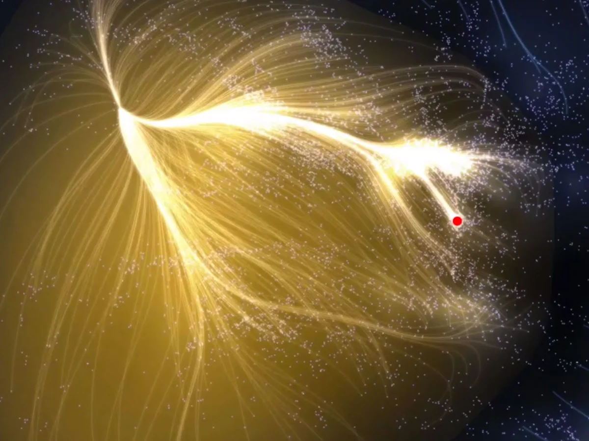
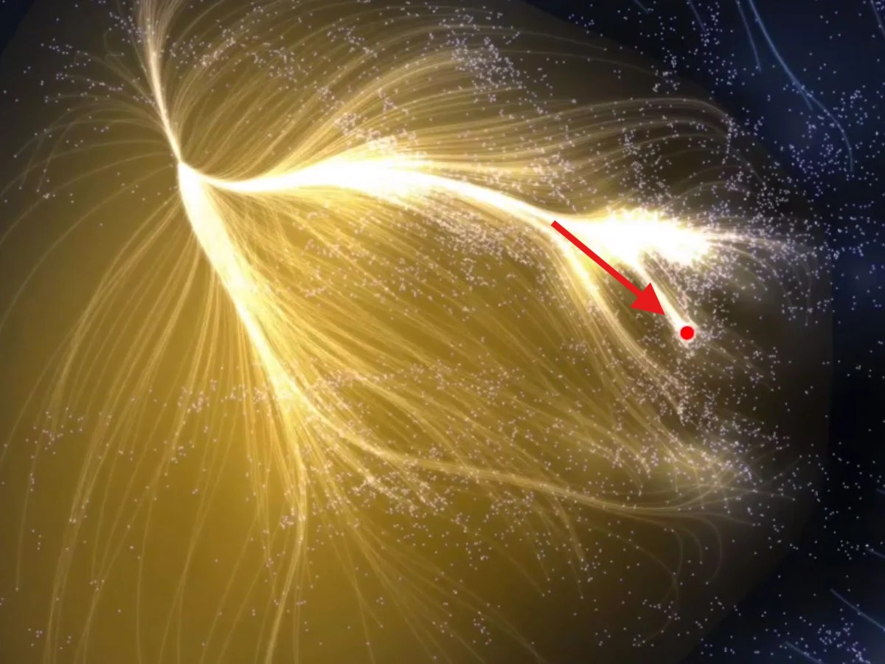

Laniakea

What is Laniakea?
Laniakea is the galaxy supercluster that is home to the Milky Way and approximately 100,000 other nearby galaxies. The name means "immense heaven" in Hawaiian, which perfectly describes its staggering scale in the universe.
Key Characteristics
- Scale: It spans over 520 million light-years in diameter.
- Mass: It has the mass of approximately 100 quadrillion(100,000,000,000,000,000 /
අගය = 1017
) suns. - The Great Attractor: All galaxies within Laniakea are flowing inward toward a mysterious gravitational focal point known as the Great Attractor.


The Structure of Our Cosmic Home

Laniakea is divided into several sub-parts:
- Virgo Supercluster: The smaller group that contains our own Milky Way.
- Hydra-Centaurus Supercluster: The region where the Great Attractor is located.
- Pavo-Indus Supercluster: Another major branch of this cosmic web.
Laniakea vs. Other Structures
| Structure | Type | Approx. Size (Light Years) | Includes |
|---|---|---|---|
| Solar System | Star System | ~2 Light Years | Earth, Sun, Planets |
| Milky Way | Galaxy | 100,000 Light Years | Billions of Stars |
| Local Group | Galaxy Group | 10 Million Light Years | Milky Way, Andromeda |
| Laniakea | Supercluster | 520 Million Light Years | 100,000+ Galaxies |
The Cosmic Web